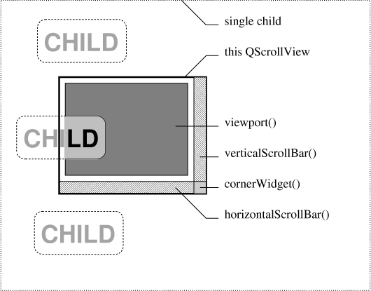
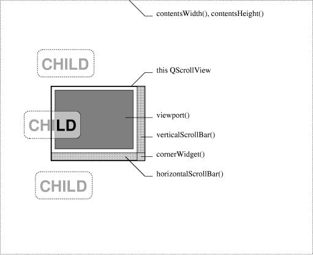
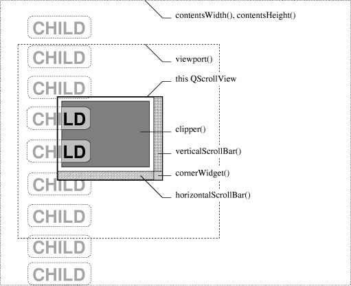

QScrollView Class Reference
The QScrollView widget provides a scrolling area with on-demand scroll bars.
More...
#include <qscrollview.h>
Inherits QFrame.
Inherited by QCanvasView, QTable, QGridView, QIconView, QListBox, QListView, and QTextEdit.
List of all member functions.
Public Members
- QScrollView ( QWidget * parent = 0, const char * name = 0, WFlags f = 0 )
- ~QScrollView ()
- enum ResizePolicy { Default, Manual, AutoOne, AutoOneFit }
- virtual void setResizePolicy ( ResizePolicy )
- ResizePolicy resizePolicy () const
- void removeChild ( QWidget * child )
- virtual void addChild ( QWidget * child, int x = 0, int y = 0 )
- virtual void moveChild ( QWidget * child, int x, int y )
- int childX ( QWidget * child )
- int childY ( QWidget * child )
- bool childIsVisible ( QWidget * child ) (obsolete)
- void showChild ( QWidget * child, bool y = TRUE ) (obsolete)
- enum ScrollBarMode { Auto, AlwaysOff, AlwaysOn }
- ScrollBarMode vScrollBarMode () const
- virtual void setVScrollBarMode ( ScrollBarMode )
- ScrollBarMode hScrollBarMode () const
- virtual void setHScrollBarMode ( ScrollBarMode )
- QWidget * cornerWidget () const
- virtual void setCornerWidget ( QWidget * corner )
- QScrollBar * horizontalScrollBar () const
- QScrollBar * verticalScrollBar () const
- QWidget * viewport () const
- QWidget * clipper () const
- int visibleWidth () const
- int visibleHeight () const
- int contentsWidth () const
- int contentsHeight () const
- int contentsX () const
- int contentsY () const
- void updateContents ( int x, int y, int w, int h )
- void updateContents ( const QRect & r )
- void updateContents ()
- void repaintContents ( int x, int y, int w, int h, bool erase = TRUE )
- void repaintContents ( const QRect & r, bool erase = TRUE )
- void repaintContents ( bool erase = TRUE )
- void contentsToViewport ( int x, int y, int & vx, int & vy ) const
- void viewportToContents ( int vx, int vy, int & x, int & y ) const
- QPoint contentsToViewport ( const QPoint & p ) const
- QPoint viewportToContents ( const QPoint & vp ) const
- void enableClipper ( bool y )
- void setStaticBackground ( bool y )
- bool hasStaticBackground () const
- QSize viewportSize ( int x, int y ) const
- bool isHorizontalSliderPressed ()
- bool isVerticalSliderPressed ()
- virtual void setDragAutoScroll ( bool b )
- bool dragAutoScroll () const
Public Slots
- virtual void resizeContents ( int w, int h )
- void scrollBy ( int dx, int dy )
- virtual void setContentsPos ( int x, int y )
- void ensureVisible ( int x, int y )
- void ensureVisible ( int x, int y, int xmargin, int ymargin )
- void center ( int x, int y )
- void center ( int x, int y, float xmargin, float ymargin )
- void updateScrollBars ()
Signals
Properties
- int contentsHeight - the height of the contents area (read only)
- int contentsWidth - the width of the contents area (read only)
- int contentsX - the X coordinate of the contents that are at the left edge of the viewport (read only)
- int contentsY - the Y coordinate of the contents that are at the top edge of the viewport (read only)
- bool dragAutoScroll - whether autoscrolling in drag move events is enabled
- ScrollBarMode hScrollBarMode - the mode for the horizontal scroll bar
- ResizePolicy resizePolicy - the resize policy
- ScrollBarMode vScrollBarMode - the mode for the vertical scroll bar
- int visibleHeight - the vertical amount of the content that is visible (read only)
- int visibleWidth - the horizontal amount of the content that is visible (read only)
Protected Members
- virtual void drawContents ( QPainter * p, int clipx, int clipy, int clipw, int cliph )
- virtual void drawContentsOffset ( QPainter * p, int offsetx, int offsety, int clipx, int clipy, int clipw, int cliph )
- virtual void contentsMousePressEvent ( QMouseEvent * e )
- virtual void contentsMouseReleaseEvent ( QMouseEvent * e )
- virtual void contentsMouseDoubleClickEvent ( QMouseEvent * e )
- virtual void contentsMouseMoveEvent ( QMouseEvent * e )
- virtual void contentsDragEnterEvent ( QDragEnterEvent * )
- virtual void contentsDragMoveEvent ( QDragMoveEvent * )
- virtual void contentsDragLeaveEvent ( QDragLeaveEvent * )
- virtual void contentsDropEvent ( QDropEvent * )
- virtual void contentsWheelEvent ( QWheelEvent * e )
- virtual void contentsContextMenuEvent ( QContextMenuEvent * e )
- virtual void viewportPaintEvent ( QPaintEvent * pe )
- virtual void viewportResizeEvent ( QResizeEvent * )
- virtual void setMargins ( int left, int top, int right, int bottom )
- int leftMargin () const
- int topMargin () const
- int rightMargin () const
- int bottomMargin () const
- virtual void setHBarGeometry ( QScrollBar & hbar, int x, int y, int w, int h )
- virtual void setVBarGeometry ( QScrollBar & vbar, int x, int y, int w, int h )
- virtual bool eventFilter ( QObject * obj, QEvent * e )
Detailed Description
The QScrollView widget provides a scrolling area with on-demand scroll bars.
The QScrollView is a large canvas - potentially larger than the
coordinate system normally supported by the underlying window
system. This is important because it is quite easy to go beyond
these limitations (e.g. many web pages are more than 32000 pixels
high). Additionally, the QScrollView can have QWidgets positioned
on it that scroll around with the drawn content. These sub-widgets
can also have positions outside the normal coordinate range (but
they are still limited in size).
To provide content for the widget, inherit from QScrollView,
reimplement drawContents() and use resizeContents() to set the
size of the viewed area. Use addChild() and moveChild() to
position widgets on the view.
To use QScrollView effectively it is important to understand its
widget structure in the three styles of use: a single large child
widget, a large panning area with some widgets and a large panning
area with many widgets.
Using One Big Widget

The first, simplest usage of QScrollView (depicted above), is
appropriate for scrolling areas that are never more than about
4000 pixels in either dimension (this is about the maximum
reliable size on X11 servers). In this usage, you just make one
large child in the QScrollView. The child should be a child of the
viewport() of the scrollview and be added with addChild():
QScrollView* sv = new QScrollView(...);
QVBox* big_box = new QVBox(sv->viewport());
sv->addChild(big_box);
You can go on to add arbitrary child widgets to the single child
in the scrollview as you would with any widget:
QLabel* child1 = new QLabel("CHILD", big_box);
QLabel* child2 = new QLabel("CHILD", big_box);
QLabel* child3 = new QLabel("CHILD", big_box);
...
Here the QScrollView has four children: the viewport(), the
verticalScrollBar(), the horizontalScrollBar() and a small
cornerWidget(). The viewport() has one child: the big QVBox. The
QVBox has the three QLabel objects as child widgets. When the view
is scrolled, the QVBox is moved; its children move with it as
child widgets normally do.
Using a Very Big View with Some Widgets

The second usage of QScrollView (depicted above) is appropriate
when few, if any, widgets are on a very large scrolling area that
is potentially larger than 4000 pixels in either dimension. In
this usage you call resizeContents() to set the size of the area
and reimplement drawContents() to paint the contents. You may also
add some widgets by making them children of the viewport() and
adding them with addChild() (this is the same as the process for
the single large widget in the previous example):
QScrollView* sv = new QScrollView(...);
QLabel* child1 = new QLabel("CHILD", sv->viewport());
sv->addChild(child1);
QLabel* child2 = new QLabel("CHILD", sv->viewport());
sv->addChild(child2);
QLabel* child3 = new QLabel("CHILD", sv->viewport());
sv->addChild(child3);
Here, the QScrollView has the same four children: the viewport(),
the verticalScrollBar(), the horizontalScrollBar() and a small
cornerWidget(). The viewport() has the three QLabel objects as
child widgets. When the view is scrolled, the scrollview moves the
child widgets individually.
Using a Very Big View with Many Widgets

The final usage of QScrollView (depicted above) is appropriate
when many widgets are on a very large scrolling area that is
potentially larger than 4000 pixels in either dimension. In this
usage you call resizeContents() to set the size of the area and
reimplement drawContents() to paint the contents. You then call
enableClipper(TRUE) and add widgets, again by making them children
of the viewport(), and adding them with addChild():
QScrollView* sv = new QScrollView(...);
sv->enableClipper(TRUE);
QLabel* child1 = new QLabel("CHILD", sv->viewport());
sv->addChild(child1);
QLabel* child2 = new QLabel("CHILD", sv->viewport());
sv->addChild(child2);
QLabel* child3 = new QLabel("CHILD", sv->viewport());
sv->addChild(child3);
Here, the QScrollView has four children: the clipper() (not the
viewport() this time), the verticalScrollBar(), the
horizontalScrollBar() and a small cornerWidget(). The clipper()
has one child: the viewport(). The viewport() has the same three
labels as child widgets. When the view is scrolled the viewport()
is moved; its children move with it as child widgets normally do.
Details Relevant for All Views
Normally you will use the first or third method if you want any
child widgets in the view.
Note that the widget you see in the scrolled area is the
viewport() widget, not the QScrollView itself. So to turn mouse
tracking on, for example, use viewport()->setMouseTracking(TRUE).
To enable drag-and-drop, you would setAcceptDrops(TRUE) on the
QScrollView (because drag-and-drop events propagate to the
parent). But to work out the logical position in the view, you
would need to map the drop co-ordinate from being relative to the
QScrollView to being relative to the contents; use the function
viewportToContents() for this.
To handle mouse events on the scrolling area, subclass scrollview
as you would subclass other widgets, but rather than
reimplementing mousePressEvent(), reimplement
contentsMousePressEvent() instead. The contents specific event
handlers provide translated events in the coordinate system of the
scrollview. If you reimplement mousePressEvent(), you'll get
called only when part of the QScrollView is clicked: and the only
such part is the "corner" (if you don't set a cornerWidget()) and
the frame; everything else is covered up by the viewport, clipper
or scroll bars.
When you construct a QScrollView, some of the widget flags apply
to the viewport() instead of being sent to the QWidget constructor
for the QScrollView. This applies to WNoAutoErase, WStaticContents, and WPaintClever. See Qt::WidgetFlags for
documentation about these flags. Here are some examples:
- An image-manipulation widget would use WNoAutoErase|WStaticContents because the widget draws all pixels
itself, and when its size increases, it only needs a paint event
for the new part because the old part remains unchanged.
- A scrolling game widget in which the background scrolls as the
characters move might use WNoAutoErase (in addition to WStaticContents) so that the window system background does not
flash in and out during scrolling.
- A word processing widget might use WNoAutoErase and repaint
itself line by line to get a less-flickery resizing. If the widget
is in a mode in which no text justification can take place, it
might use WStaticContents too, so that it would only get a
repaint for the newly visible parts.
Child widgets may be moved using addChild() or moveChild(). Use
childX() and childY() to get the position of a child widget.
A widget may be placed in the corner between the vertical and
horizontal scrollbars with setCornerWidget(). You can get access
to the scrollbars using horizontalScrollBar() and
verticalScrollBar(), and to the viewport with viewport(). The
scroll view can be scrolled using scrollBy(), ensureVisible(),
setContentsPos() or center().
The visible area is given by visibleWidth() and visibleHeight(),
and the contents area by contentsWidth() and contentsHeight(). The
contents may be repainted using one of the repaintContents() or
updateContents() functions.
Coordinate conversion is provided by contentsToViewport() and
viewportToContents().
The contentsMoving() signal is emitted just before the contents
are moved to a new position.
Warning: QScrollView currently does not erase the background when
resized, i.e. you must always clear the background manually in
scrollview subclasses. This will change in a future version of Qt
and we recommend specifying the WNoAutoErase flag explicitly.


See also Abstract Widget Classes.
Member Type Documentation
QScrollView::ResizePolicy
This enum type is used to control a QScrollView's reaction to
resize events.
- QScrollView::Default - the QScrollView selects one of the other settings
automatically when it has to. In this version of Qt, QScrollView
changes to Manual if you resize the contents with
resizeContents() and to AutoOne if a child is added.
- QScrollView::Manual - the contents stays the size set by resizeContents().
- QScrollView::AutoOne - if there is only one child widget the contents stays
the size of that widget. Otherwise the behavior is undefined.
- QScrollView::AutoOneFit - if there is only one child widget the contents stays
the size of that widget's sizeHint(). If the scrollview is resized
larger than the child's sizeHint(), the child will be resized to
fit. If there is more than one child, the behavior is undefined.
QScrollView::ScrollBarMode
This enum type describes the various modes of QScrollView's scroll
bars.
- QScrollView::Auto - QScrollView shows a scroll bar when the content is
too large to fit and not otherwise. This is the default.
- QScrollView::AlwaysOff - QScrollView never shows a scroll bar.
- QScrollView::AlwaysOn - QScrollView always shows a scroll bar.
(The modes for the horizontal and vertical scroll bars are
independent.)
Member Function Documentation
QScrollView::QScrollView ( QWidget * parent = 0, const char * name = 0, WFlags f = 0 )
Constructs a QScrollView called name with parent parent and
widget flags f.
The widget flags WStaticContents, WNoAutoErase and WPaintClever are propagated to the viewport() widget. The other
widget flags are propagated to the parent constructor as usual.
QScrollView::~QScrollView ()
Destroys the QScrollView. Any children added with addChild() will
be deleted.
void QScrollView::addChild ( QWidget * child, int x = 0, int y = 0 ) [virtual]
Inserts the widget, child, into the scrolled area positioned at
(x, y). The position defaults to (0, 0). If the child is
already in the view, it is just moved.
You may want to call enableClipper(TRUE) if you add a large number
of widgets.
Example: scrollview/scrollview.cpp.
int QScrollView::bottomMargin () const [protected]
Returns the bottom margin.
See also setMargins().
void QScrollView::center ( int x, int y ) [slot]
Scrolls the content so that the point (x, y) is in the center
of visible area.
Example: scrollview/scrollview.cpp.
void QScrollView::center ( int x, int y, float xmargin, float ymargin ) [slot]
This is an overloaded member function, provided for convenience. It behaves essentially like the above function.
Scrolls the content so that the point (x, y) is visible with
the xmargin and ymargin margins (as fractions of visible
the area).
For example:
- Margin 0.0 allows (x, y) to be on the edge of the visible area.
- Margin 0.5 ensures that (x, y) is in middle 50% of the visible area.
- Margin 1.0 ensures that (x, y) is in the center of the the visible area.
bool QScrollView::childIsVisible ( QWidget * child )
This function is obsolete. It is provided to keep old source working. We strongly advise against using it in new code.
Returns TRUE if child is visible. This is equivalent
to child->isVisible().
int QScrollView::childX ( QWidget * child )
Returns the X position of the given child widget. Use this
rather than QWidget::x() for widgets added to the view.
This function returns 0 if child has not been added to the view.
int QScrollView::childY ( QWidget * child )
Returns the Y position of the given child widget. Use this
rather than QWidget::y() for widgets added to the view.
This function returns 0 if child has not been added to the view.
QWidget * QScrollView::clipper () const
Returns the clipper widget. Contents in the scrollview are
ultimately clipped to be inside the clipper widget.
You should not need to use this function.
See also visibleWidth and visibleHeight.
void QScrollView::contentsContextMenuEvent ( QContextMenuEvent * e ) [virtual protected]
This event handler is called whenever the QScrollView receives a
contextMenuEvent() in e: the mouse position is translated to
be a point on the contents.
Example: chart/canvasview.cpp.
void QScrollView::contentsDragEnterEvent ( QDragEnterEvent * ) [virtual protected]
This event handler is called whenever the QScrollView receives a
dragEnterEvent(): the drag position is translated to be a point
on the contents.
Reimplemented in QTable.
void QScrollView::contentsDragLeaveEvent ( QDragLeaveEvent * ) [virtual protected]
This event handler is called whenever the QScrollView receives a
dragLeaveEvent(): the drag position is translated to be a point
on the contents.
Reimplemented in QTable.
void QScrollView::contentsDragMoveEvent ( QDragMoveEvent * ) [virtual protected]
This event handler is called whenever the QScrollView receives a
dragMoveEvent(): the drag position is translated to be a point on
the contents.
Reimplemented in QTable.
void QScrollView::contentsDropEvent ( QDropEvent * ) [virtual protected]
This event handler is called whenever the QScrollView receives a
dropEvent(): the drop position is translated to be a point on the
contents.
Reimplemented in QTable.
int QScrollView::contentsHeight () const
Returns the height of the contents area.
See the "contentsHeight" property for details.
void QScrollView::contentsMouseDoubleClickEvent ( QMouseEvent * e ) [virtual protected]
This event handler is called whenever the QScrollView receives a
mouseDoubleClickEvent(): the click position in e is translated to be a
point on the contents.
The default implementation generates a normal mouse press event.
Reimplemented in QListView.
void QScrollView::contentsMouseMoveEvent ( QMouseEvent * e ) [virtual protected]
This event handler is called whenever the QScrollView receives a
mouseMoveEvent(): the mouse position in e is translated to be a point
on the contents.
Examples: canvas/canvas.cpp and chart/canvasview.cpp.
Reimplemented in QListView.
void QScrollView::contentsMousePressEvent ( QMouseEvent * e ) [virtual protected]
This event handler is called whenever the QScrollView receives a
mousePressEvent(): the press position in e is translated to be a point
on the contents.
Examples: canvas/canvas.cpp and chart/canvasview.cpp.
Reimplemented in QListView.
void QScrollView::contentsMouseReleaseEvent ( QMouseEvent * e ) [virtual protected]
This event handler is called whenever the QScrollView receives a
mouseReleaseEvent(): the release position in e is translated to be a
point on the contents.
Reimplemented in QListView.
void QScrollView::contentsMoving ( int x, int y ) [signal]
This signal is emitted just before the contents are moved to
position (x, y).
See also contentsX and contentsY.
void QScrollView::contentsToViewport ( int x, int y, int & vx, int & vy ) const
Translates a point (x, y) in the contents to a point (vx,
vy) on the viewport() widget.
QPoint QScrollView::contentsToViewport ( const QPoint & p ) const
This is an overloaded member function, provided for convenience. It behaves essentially like the above function.
Returns the point p translated to a point on the viewport()
widget.
void QScrollView::contentsWheelEvent ( QWheelEvent * e ) [virtual protected]
This event handler is called whenever the QScrollView receives a
wheelEvent() in e: the mouse position is translated to be a
point on the contents.
int QScrollView::contentsWidth () const
Returns the width of the contents area.
See the "contentsWidth" property for details.
int QScrollView::contentsX () const
Returns the X coordinate of the contents that are at the left edge of the viewport.
See the "contentsX" property for details.
int QScrollView::contentsY () const
Returns the Y coordinate of the contents that are at the top edge of the viewport.
See the "contentsY" property for details.
QWidget * QScrollView::cornerWidget () const
Returns the widget in the corner between the two scroll bars.
By default, no corner widget is present.
Example: scrollview/scrollview.cpp.
bool QScrollView::dragAutoScroll () const
Returns TRUE if autoscrolling in drag move events is enabled; otherwise returns FALSE.
See the "dragAutoScroll" property for details.
void QScrollView::drawContents ( QPainter * p, int clipx, int clipy, int clipw, int cliph ) [virtual protected]
Reimplement this function if you are viewing a drawing area rather
than a widget.
The function should draw the rectangle (clipx, clipy, clipw, cliph) of the contents using painter p. The clip
rectangle is in the scrollview's coordinates.
For example:
{
// Fill a 40000 by 50000 rectangle at (100000,150000)
// Calculate the coordinates...
int x1 = 100000, y1 = 150000;
int x2 = x1+40000-1, y2 = y1+50000-1;
// Clip the coordinates so X/Windows will not have problems...
if (x1 < clipx) x1=clipx;
if (y1 < clipy) y1=clipy;
if (x2 > clipx+clipw-1) x2=clipx+clipw-1;
if (y2 > clipy+cliph-1) y2=clipy+cliph-1;
// Paint using the small coordinates...
if ( x2 >= x1 && y2 >= y1 )
p->fillRect(x1, y1, x2-x1+1, y2-y1+1, red);
}
The clip rectangle and translation of the painter p is already
set appropriately.
Example: qdir/qdir.cpp.
Reimplemented in QCanvasView and QTable.
void QScrollView::drawContentsOffset ( QPainter * p, int offsetx, int offsety, int clipx, int clipy, int clipw, int cliph ) [virtual protected]
For backward-compatibility only. It is easier to use
drawContents(QPainter*,int,int,int,int).
The default implementation translates the painter appropriately
and calls drawContents(QPainter*,int,int,int,int). See
drawContents() for an explanation of the parameters p, offsetx, offsety, clipx, clipy, clipw and cliph.
Reimplemented in QListView.
void QScrollView::enableClipper ( bool y )
When a large numbers of child widgets are in a scrollview,
especially if they are close together, the scrolling performance
can suffer greatly. If y is TRUE the scrollview will use an
extra widget to group child widgets.
Note that you may only call enableClipper() prior to adding
widgets.
For a full discussion, see this class's detailed description.
Example: scrollview/scrollview.cpp.
void QScrollView::ensureVisible ( int x, int y ) [slot]
Scrolls the content so that the point (x, y) is visible with at
least 50-pixel margins (if possible, otherwise centered).
void QScrollView::ensureVisible ( int x, int y, int xmargin, int ymargin ) [slot]
This is an overloaded member function, provided for convenience. It behaves essentially like the above function.
Scrolls the content so that the point (x, y) is visible with at
least the xmargin and ymargin margins (if possible,
otherwise centered).
bool QScrollView::eventFilter ( QObject * obj, QEvent * e ) [virtual protected]
This event filter ensures the scroll bars are updated when a
single contents widget is resized, shown, hidden or destroyed; it
passes mouse events to the QScrollView. The event is in e and
the object is in obj.
Reimplemented from QObject.
Reimplemented in QListView.
ScrollBarMode QScrollView::hScrollBarMode () const
Returns the mode for the horizontal scroll bar.
See the "hScrollBarMode" property for details.
bool QScrollView::hasStaticBackground () const
Returns TRUE if QScrollView uses a static background; otherwise
returns FALSE.
See also setStaticBackground().
QScrollBar * QScrollView::horizontalScrollBar () const
Returns the component horizontal scroll bar. It is made available
to allow accelerators, autoscrolling, etc.
It should not be used for other purposes.
This function never returns 0.
void QScrollView::horizontalSliderPressed () [signal]
This signal is emitted whenever the user presses the horizontal slider.
void QScrollView::horizontalSliderReleased () [signal]
This signal is emitted whenever the user releases the horizontal slider.
bool QScrollView::isHorizontalSliderPressed ()
Returns TRUE if horizontal slider is pressed by user; otherwise returns FALSE.
bool QScrollView::isVerticalSliderPressed ()
Returns TRUE if vertical slider is pressed by user; otherwise returns FALSE.
int QScrollView::leftMargin () const [protected]
Returns the left margin.
See also setMargins().
void QScrollView::moveChild ( QWidget * child, int x, int y ) [virtual]
Repositions the child widget to (x, y). This function is
the same as addChild().
void QScrollView::removeChild ( QWidget * child )
Removes the child widget from the scrolled area. Note that this
happens automatically if the child is deleted.
void QScrollView::repaintContents ( int x, int y, int w, int h, bool erase = TRUE )
Calls repaint() on a rectangle defined by x, y, w, h,
translated appropriately. If the rectangle is not visible, nothing
is repainted. If erase is TRUE the background is cleared using
the background color.
See also updateContents().
void QScrollView::repaintContents ( const QRect & r, bool erase = TRUE )
This is an overloaded member function, provided for convenience. It behaves essentially like the above function.
Repaints the contents of rectangle r. If erase is TRUE the
background is cleared using the background color.
void QScrollView::repaintContents ( bool erase = TRUE )
This is an overloaded member function, provided for convenience. It behaves essentially like the above function.
Repaints the contents. If erase is TRUE the background is
cleared using the background color.
void QScrollView::resizeContents ( int w, int h ) [virtual slot]
Sets the size of the contents area to w pixels wide and h
pixels high and updates the viewport accordingly.
ResizePolicy QScrollView::resizePolicy () const
Returns the resize policy.
See the "resizePolicy" property for details.
int QScrollView::rightMargin () const [protected]
Returns the right margin.
See also setMargins().
void QScrollView::scrollBy ( int dx, int dy ) [slot]
Scrolls the content by dx to the left and dy upwards.
void QScrollView::setContentsPos ( int x, int y ) [virtual slot]
Scrolls the content so that the point (x, y) is in the top-left
corner.
Example: process/process.cpp.
void QScrollView::setCornerWidget ( QWidget * corner ) [virtual]
Sets the widget in the corner between the two scroll bars.
You will probably also want to set at least one of the scroll bar
modes to AlwaysOn.
Passing 0 shows no widget in the corner.
Any previous corner widget is hidden.
You may call setCornerWidget() with the same widget at different
times.
All widgets set here will be deleted by the QScrollView when it is
destroyed unless you separately reparent the widget after setting
some other corner widget (or 0).
Any newly set widget should have no current parent.
By default, no corner widget is present.
See also vScrollBarMode and hScrollBarMode.
Example: scrollview/scrollview.cpp.
void QScrollView::setDragAutoScroll ( bool b ) [virtual]
Sets whether autoscrolling in drag move events is enabled to b.
See the "dragAutoScroll" property for details.
void QScrollView::setHBarGeometry ( QScrollBar & hbar, int x, int y, int w, int h ) [virtual protected]
Called when the horizontal scroll bar geometry changes. This is
provided as a protected function so that subclasses can do
interesting things such as providing extra buttons in some of the
space normally used by the scroll bars.
The default implementation simply gives all the space to hbar.
The new geometry is given by x, y, w and h.
See also setVBarGeometry().
void QScrollView::setHScrollBarMode ( ScrollBarMode ) [virtual]
Sets the mode for the horizontal scroll bar.
See the "hScrollBarMode" property for details.
void QScrollView::setMargins ( int left, int top, int right, int bottom ) [virtual protected]
Sets the margins around the scrolling area to left, top, right and bottom. This is useful for applications such as
spreadsheets with "locked" rows and columns. The marginal space is
inside the frameRect() and is left blank; reimplement
drawFrame() or put widgets in the unused area.
By default all margins are zero.
See also frameChanged().
void QScrollView::setResizePolicy ( ResizePolicy ) [virtual]
Sets the resize policy.
See the "resizePolicy" property for details.
void QScrollView::setStaticBackground ( bool y )
Sets the scrollview to have a static background if y is TRUE,
or a scrolling background if y is FALSE. By default, the
background is scrolling.
Be aware that this mode is quite slow, as a full repaint of the
visible area has to be triggered on every contents move.
See also hasStaticBackground().
void QScrollView::setVBarGeometry ( QScrollBar & vbar, int x, int y, int w, int h ) [virtual protected]
Called when the vertical scroll bar geometry changes. This is
provided as a protected function so that subclasses can do
interesting things such as providing extra buttons in some of the
space normally used by the scroll bars.
The default implementation simply gives all the space to vbar.
The new geometry is given by x, y, w and h.
See also setHBarGeometry().
void QScrollView::setVScrollBarMode ( ScrollBarMode ) [virtual]
Sets the mode for the vertical scroll bar.
See the "vScrollBarMode" property for details.
void QScrollView::showChild ( QWidget * child, bool y = TRUE )
This function is obsolete. It is provided to keep old source working. We strongly advise against using it in new code.
Sets the visibility of child. Equivalent to
QWidget::show() or QWidget::hide().
int QScrollView::topMargin () const [protected]
Returns the top margin.
See also setMargins().
void QScrollView::updateContents ( int x, int y, int w, int h )
Calls update() on a rectangle defined by x, y, w, h,
translated appropriately. If the rectangle is not visible, nothing
is repainted.
See also repaintContents().
void QScrollView::updateContents ( const QRect & r )
This is an overloaded member function, provided for convenience. It behaves essentially like the above function.
Updates the contents in rectangle r
void QScrollView::updateContents ()
This is an overloaded member function, provided for convenience. It behaves essentially like the above function.
void QScrollView::updateScrollBars () [slot]
Updates scroll bars: all possibilities are considered. You should
never need to call this in your code.
ScrollBarMode QScrollView::vScrollBarMode () const
Returns the mode for the vertical scroll bar.
See the "vScrollBarMode" property for details.
QScrollBar * QScrollView::verticalScrollBar () const
Returns the component vertical scroll bar. It is made available to
allow accelerators, autoscrolling, etc.
It should not be used for other purposes.
This function never returns 0.
void QScrollView::verticalSliderPressed () [signal]
This signal is emitted whenever the user presses the vertical slider.
void QScrollView::verticalSliderReleased () [signal]
This signal is emitted whenever the user releases the vertical slider.
QWidget * QScrollView::viewport () const
Returns the viewport widget of the scrollview. This is the widget
containing the contents widget or which is the drawing area.
Examples: helpsystem/tooltip.cpp and scrollview/scrollview.cpp.
void QScrollView::viewportPaintEvent ( QPaintEvent * pe ) [virtual protected]
This is a low-level painting routine that draws the viewport
contents. Reimplement this if drawContents() is too high-level
(for example, if you don't want to open a QPainter on the
viewport). The paint event is passed in pe.
void QScrollView::viewportResizeEvent ( QResizeEvent * ) [virtual protected]
To provide simple processing of events on the contents, this
function receives all resize events sent to the viewport.
See also QWidget::resizeEvent().
Example: chart/canvasview.cpp.
QSize QScrollView::viewportSize ( int x, int y ) const
Returns the viewport size for size (x, y).
The viewport size depends on (x, y) (the size of the contents),
the size of this widget and the modes of the horizontal and
vertical scroll bars.
This function permits widgets that can trade vertical and
horizontal space for each other to control scroll bar appearance
better. For example, a word processor or web browser can control
the width of the right margin accurately, whether or not there
needs to be a vertical scroll bar.
void QScrollView::viewportToContents ( int vx, int vy, int & x, int & y ) const
Translates a point (vx, vy) on the viewport() widget to a
point (x, y) in the contents.
QPoint QScrollView::viewportToContents ( const QPoint & vp ) const
This is an overloaded member function, provided for convenience. It behaves essentially like the above function.
Returns the point on the viewport vp translated to a point in
the contents.
int QScrollView::visibleHeight () const
Returns the vertical amount of the content that is visible.
See the "visibleHeight" property for details.
int QScrollView::visibleWidth () const
Returns the horizontal amount of the content that is visible.
See the "visibleWidth" property for details.
Property Documentation
int contentsHeight
This property holds the height of the contents area.
Get this property's value with contentsHeight().
int contentsWidth
This property holds the width of the contents area.
Get this property's value with contentsWidth().
int contentsX
This property holds the X coordinate of the contents that are at the left edge of the viewport.
Get this property's value with contentsX().
int contentsY
This property holds the Y coordinate of the contents that are at the top edge of the viewport.
Get this property's value with contentsY().
bool dragAutoScroll
This property holds whether autoscrolling in drag move events is enabled.
If this property is set to TRUE (the default), the QScrollView
automatically scrolls the contents in drag move events if the user
moves the cursor close to a border of the view. Of course this
works only if the viewport accepts drops. Specifying FALSE
disables this autoscroll feature.
Warning: Enabling this property might not be enough to
effectively turn on autoscrolling. If you put a custom widget in
the QScrollView, you might need to call QDragEvent::ignore() on
the event in the dragEnterEvent() and dragMoveEvent()
reimplementations.
Set this property's value with setDragAutoScroll() and get this property's value with dragAutoScroll().
This property holds the mode for the horizontal scroll bar.
The default mode is QScrollView::Auto.
See also vScrollBarMode.
Set this property's value with setHScrollBarMode() and get this property's value with hScrollBarMode().
This property holds the resize policy.
The default is Default.
See also ResizePolicy.
Set this property's value with setResizePolicy() and get this property's value with resizePolicy().
This property holds the mode for the vertical scroll bar.
The default mode is QScrollView::Auto.
See also hScrollBarMode.
Set this property's value with setVScrollBarMode() and get this property's value with vScrollBarMode().
int visibleHeight
This property holds the vertical amount of the content that is visible.
Get this property's value with visibleHeight().
int visibleWidth
This property holds the horizontal amount of the content that is visible.
Get this property's value with visibleWidth().
This file is part of the Qt toolkit.
Copyright © 1995-2007
Trolltech. All Rights Reserved.